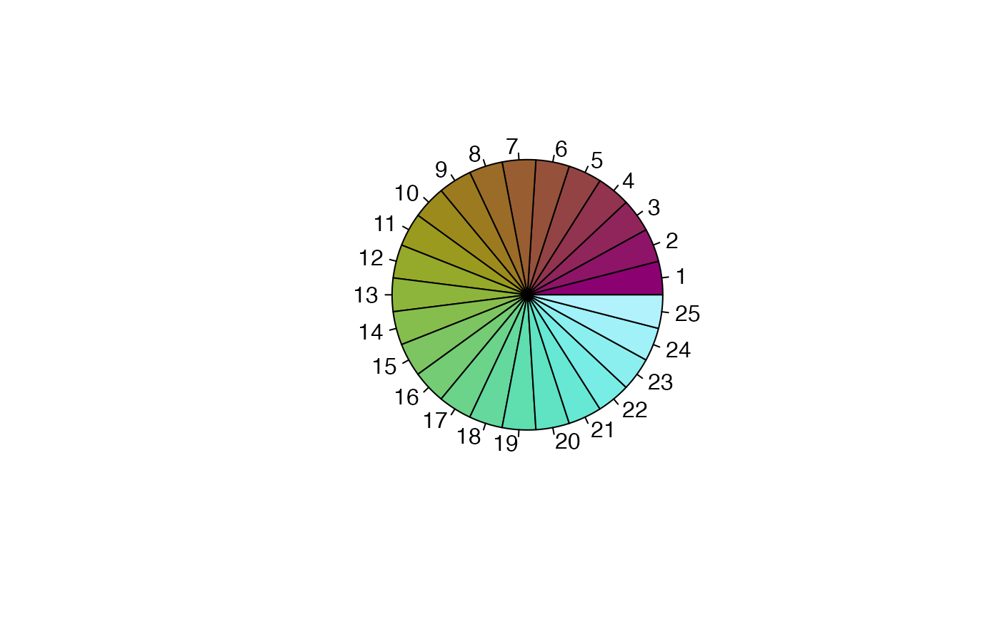
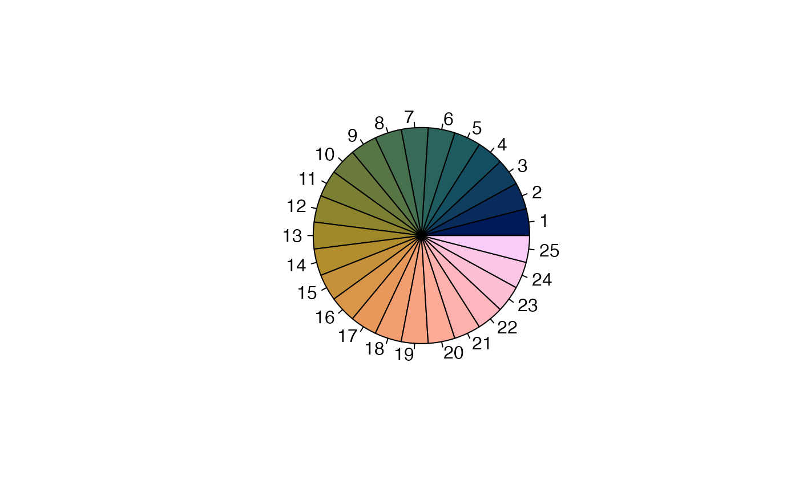
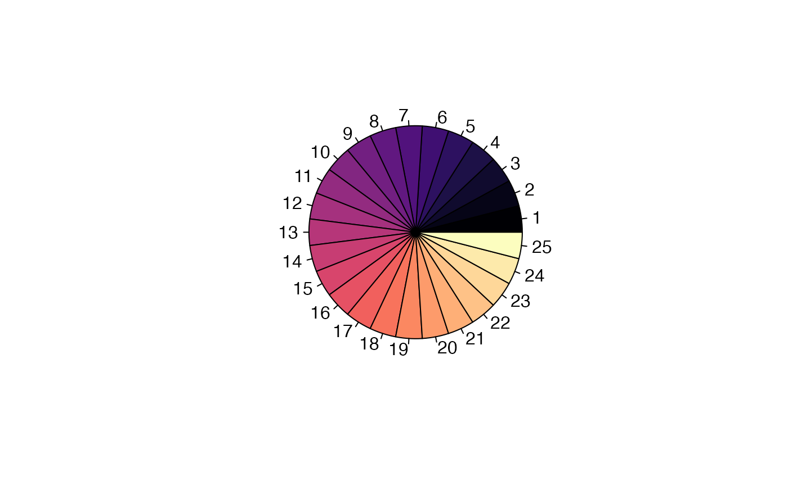
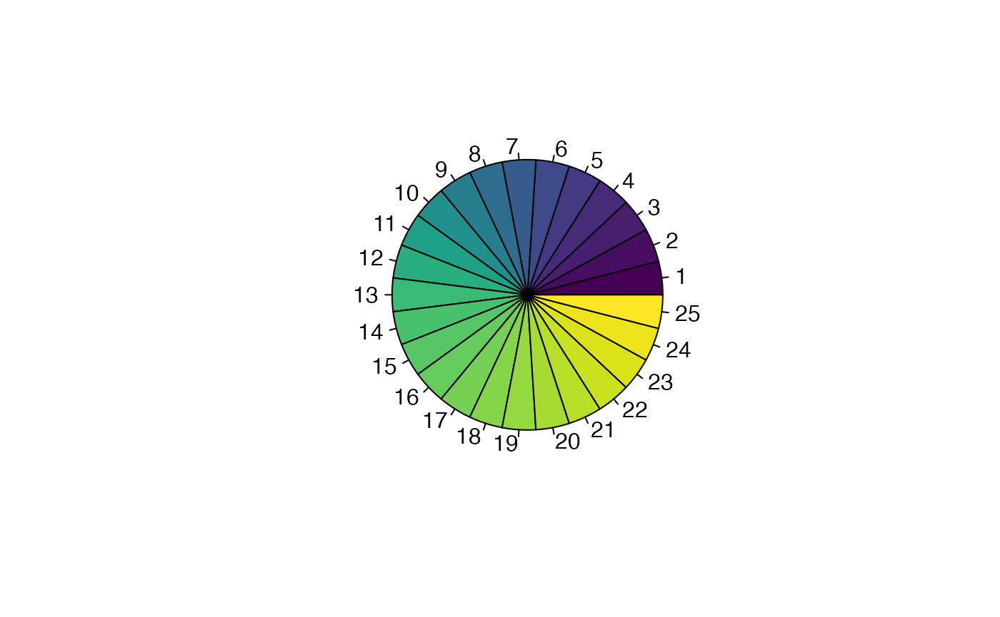
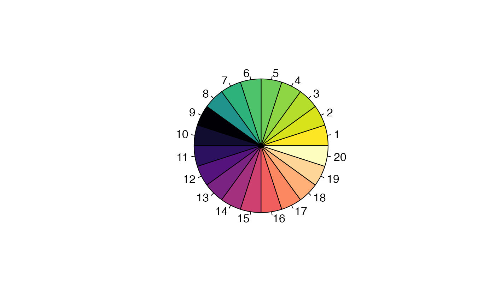

vignettes/color-palettes.Rmd
color-palettes.RmdThe color palette workflow created for MicrobiomeR are based on the
get_color_palette(pal_func = ...) with a palette function
that returns grDevices::colorRampPalette(...) (called),
grDevices::colorRampPalette (not called), or a color
palette function that returns a character vector. Several palette
functions come built with MicrobiomeR and are used in the plotting
functions.
Getting a color palette is simple. You can toggle the palette preview
with display=FALSE. The example counts colors from the same
deterministic, reduced dataset used by the other executable vignettes;
it is illustrative and does not replace the full exported dataset.
small_phyloseq <- small_phyloseq_example(MicrobiomeR::phyloseq_silva_2)
analyzed_silva <- as_MicrobiomeR_format(small_phyloseq, "analyzed_format")
data <- analyzed_silva$data$stats_tax_data$Phylum
data_len <- length(unique(data))
custom_pal <- get_color_palette(color_no=data_len)
print(custom_pal)
#> [1] "#FDE725" "#90D743" "#30B47B" "#311165" "#A6317D" "#FC8A62" "#FCFDBF"We have built in support for the scico package.
basic_pal <- scico_palette(scico_palette="hawaii")(25)
pie(rep(1, length(basic_pal)), col=basic_pal)
print(basic_pal)
#> [1] "#8C0172" "#8E1468" "#90255C" "#92344F" "#944344" "#96513B" "#985E31"
#> [8] "#9A6C28" "#9C7B20" "#9C8A1C" "#9A9B1E" "#95A92A" "#8EB53B" "#86BE4E"
#> [15] "#7DC562" "#74CC75" "#6CD38A" "#64D89D" "#5FDEB0" "#5FE3C2" "#66E8D4"
#> [22] "#78EDE5" "#8CEFEF" "#A0F1F8" "#B2F2FD"
better_pal <- get_color_palette(pal_func = scico_palette, color_no = 25)
print(better_pal)
#> [1] "#001959" "#0A2C5C" "#0F3E5F" "#144E61" "#1D5B61" "#2A645D" "#386B57"
#> [8] "#47704E" "#587645" "#697A3C" "#7A7F33" "#8D842D" "#A0892A" "#B28D2E"
#> [15] "#C7903A" "#D9954A" "#E8985B" "#F39E70" "#F9A383" "#FDAA98" "#FDB1AC"
#> [22] "#FDB6BD" "#FBBED2" "#FBC5E5" "#F9CCF9"We also provide support for the viridis package.
Typically, you’d use the viridis palette like we do below.

print(basic_pal)
#> [1] "#000004FF" "#060517FF" "#100B2EFF" "#1D1147FF" "#2D1160FF" "#3F0F72FF"
#> [7] "#51127CFF" "#611880FF" "#721F81FF" "#822681FF" "#932B80FF" "#A5317EFF"
#> [13] "#B63679FF" "#C73D73FF" "#D8456CFF" "#E65164FF" "#F1605DFF" "#F8735CFF"
#> [19] "#FB8861FF" "#FD9B6BFF" "#FEAF77FF" "#FEC287FF" "#FED799FF" "#FDEAABFF"
#> [25] "#FCFDBFFF"With MicrobiomeR, the viridis palette can be
optimized.
better_pal <- get_color_palette(pal_func = viridis_palette, color_no = 25)
pie(rep(1, length(better_pal)), col=better_pal)
print(better_pal)
#> [1] "#440154" "#470D60" "#481E6F" "#472B7A" "#443A83" "#3E4A89" "#365B8D"
#> [8] "#2E6D8E" "#277F8E" "#21908C" "#1FA187" "#28AE7F" "#39BA76" "#48C16E"
#> [15] "#56C666" "#65CB5D" "#75D054" "#85D549" "#95D83F" "#A7DB34" "#B8DE29"
#> [22] "#CAE11F" "#DBE318" "#EDE51B" "#FDE725"Here is a useful functionality. Combining color palettes can help
with situations where you need something more custom. This can be
especially helpful if you are using more than 20 colors. The
combination_palette function can take a dynamic number of
arguments, must be named and the value must be a list. The
list members can contain members with the following names:
You can use any name for your arguments, but the values must be a named list. palette: This is a palette function that returns a vector of colors. args: This is another named list used for the palette function parameters. range: This is a range (1:10) used to subset the color palette vector. rev: This is a logical (TRUE/FALSE)used to reverse the color palette.
# This is the code for MicrobiomeR::viridis_magma_palette, but
# it's also a useful example for understanding how this works.
viridis_magma_palette <- function(viridis_number = 800,
viridis_range = 300:viridis_number,
viridis_rev = TRUE,
magma_number = 500,
magma_range = 0:magma_number,
magma_rev = FALSE,
...) {
# Get the arguments for both functions
if (!missing(...)){
v_args = list(n=viridis_number, ...)
m_args = list(n=magma_number, ...)
} else {
v_args = list(n=viridis_number)
m_args = list(n=magma_number)
}
# Get combo palette
crp <- combination_palette(viridis =
list(palette = viridis::viridis,
args = v_args,
range = viridis_range,
rev = viridis_rev),
magma =
list(palette = viridis::magma,
args = m_args,
range = magma_range,
rev = magma_rev)
)
return(crp)
}
combo_palette <- get_color_palette(pal_func = viridis_magma_palette)
combo_palette
#> [1] "#FDE725" "#D9E319" "#B4DE2B" "#8FD644" "#6DCD58" "#4EC36B" "#2DB27C"
#> [8] "#20938C" "#010105" "#110D30" "#2D1161" "#55137D" "#7B2382" "#A3307E"
#> [15] "#CE4070" "#F05F5D" "#FC8861" "#FEB078" "#FED698" "#FCFDBF"